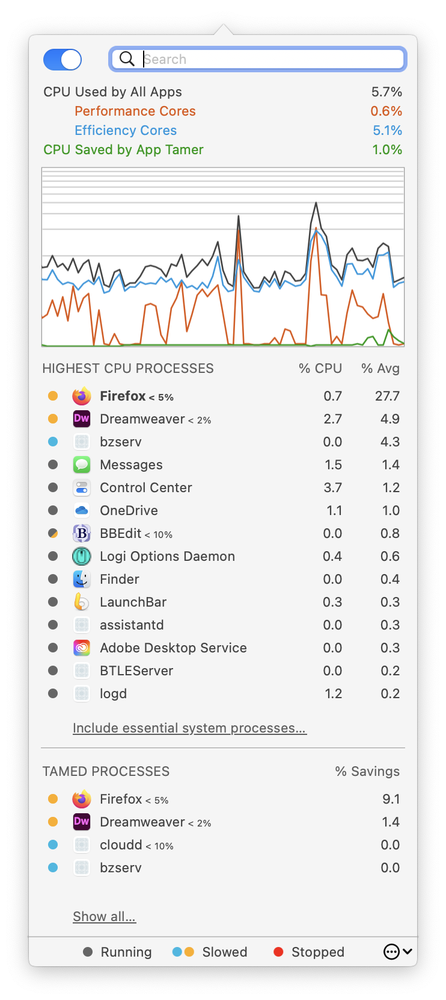
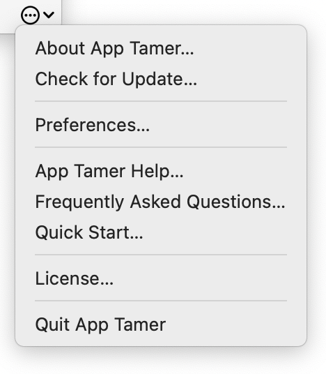

App Tamer Help
App Tamer HelpEssentials
What App Tamer does
There are a few basic concepts that will help you understand what App Tamer does:
- You have applications that use your computer's processor (we'll refer to this as using CPU time).
- The application you're using at any given time is in front, and all the rest of your running applications are in the background.
- Some applications, particularly web browsers, continue to use CPU time even when they're in the background. This is usually not what you want.
- App Tamer can pause those applications when they're in the background so they use zero CPU time, then wake them up when you bring them to the front.
- Some applications need a little CPU time to do things even when you're not using them. In those cases, App Tamer can slow applications down without pausing them completely. This doesn't save as much power, but can still reduce CPU and battery use considerably.
How to use it
App Tamer comes preconfigured to manage many common applications, including Safari, Mail, Google Chrome, Firefox, Spotlight, Time Machine, Photoshop, Illustrator, Word and others. To save CPU and battery when running these applications, just launch App Tamer and it will take care of the rest.
For other applications, use App Tamer's process list to determine which ones are wasting processing power and then click on them to manage their processor use.

We suggest you start by doing the following:
- Launch App Tamer.
- Launch the applications you commonly run and start using them.
- Once you've worked a few minutes, click the App Tamer icon in the menu bar. Your apps will be listed in order of average CPU usage in App Tamer's window (see the picture at right).
- Starting at the top of the list, decide which of those applications you'd like to have managed when they're in the background.
- Click on an application to manage it. You'll see a popover with options that are described in the Managing Apps section of this manual.
You can click on the App Tamer icon in your menu bar at any time to see what's using CPU time on your Mac or to change your settings.
If an application starts using an excessive amount of CPU time, App Tamer will pop up a warning and ask you what you'd like to do. You can change the amount of CPU time required to trigger this warning in the Detection tab of your App Tamer preferences.
The App Tamer Window
App Tamer's window is shown at right. Its main controls and components are:
On / Off
You can turn App Tamer's application management feature on and off using this switch. When you turn App Tamer off, you'll be asked for the amount of time you want to disable it. It will automatically start managing your applications again after that time elapses.
Search Box
Typing part of an application's name here will filter the process list so that only matching applications are shown.
If you're geeky and know what a process ID is, you can type a process ID into the search box to show a specific process.
CPU Used by All Apps
This tells you how much total CPU time is being used on your Mac, taking into account multiple processor cores. (So 100% on an 8-core MacBook Pro means that all eight processor cores are completely busy).
Performance Cores & Efficiency Cores
These numbers are only displayed on Macs that run on Apple Silicon processors. Those processors have two different types of processing cores, one set for high-performance and another set for energy efficiency. The usage of each type of core is broken out separately here.
CPU Saved by App Tamer
This is an estimate of how much total CPU time is being saved by App Tamer. It's only an estimate, and tends to be conservative (App Tamer may actually be saving more, depending on the circumstances).
Graph of CPU Use and Savings
The amount of CPU used and saved is shown graphically here. Moving your mouse over an application's name will show that app's CPU usage in the graph instead of App Tamer's savings.
You can control-click on the graph to change it from a linear to logarithmic scale. The logarithmic scale is useful on machines with many CPUs - it zooms in on the lower end of the graph where most of the activity happens.
You can also control-click on the graph to hide it entirely.
Highest CPU Processes
This list shows you which processes and applications are currently using the most CPU and that can be controlled using App Tamer. It omits processes that App Tamer cannot control or those that are unsafe to stop or slow down. The colored dot next to each app shows whether that app is slowed or stopped by App Tamer. Half-filled dots show apps that are running but have settings that may slow or stop them later.
Note that the CPU percentages shown are per-processor core, so an application that's using 100% CPU is using all of one core. Some apps can therefore use more than 100% if they split their work over multiple CPU cores.
Clicking on the "Include essential system processes…" link below the list will change what it shows. There are two options:
- Only processes that are using the most CPU time.
- All processes, including essential system processes that can't be stopped and processes that aren't using any CPU time.
Tamed Processes

This list shows you the applications that App Tamer is managing, along with an estimate of the amount of CPU time being saved for each one. By default it just shows those with the most CPU saved. Clicking the "Show all…" link at the bottom will change the list so that it shows all managed applications.
Like the process list, savings are calculated per processor core.
Utility Menu Button
Clicking on the little icon in the bottom right corner of the App Tamer window will bring up the utility menu, shown at right. The items in the menu are self-explanatory.
Note that this menu is where you'll find App Tamer's Preferences, along with the License command where you enter your serial number after purchasing App Tamer.
Tips
- After clicking on App Tamer's icon in the menu bar to show its window, you can click and drag the edge of the window to tear it away from the menu bar. Once you do this, it will behave like a regular window until you close it.
- You can click and drag on the dividing line between the upper and lower lists to change how many items you see in each list.